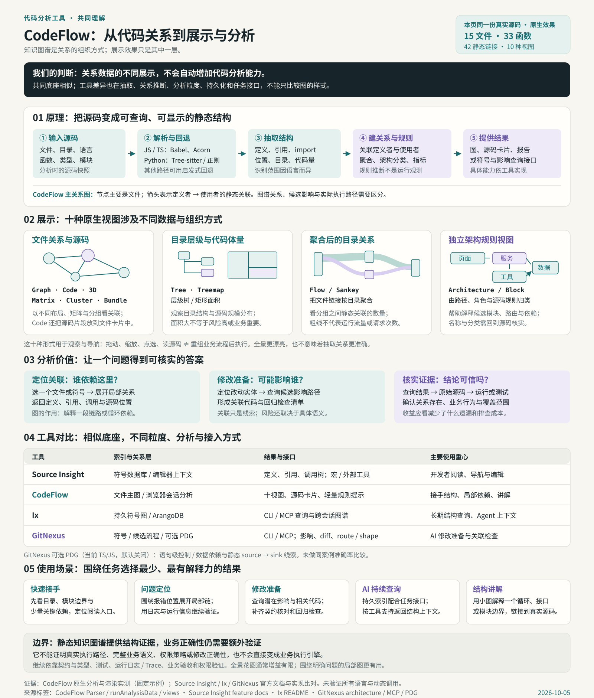

从源码得到哪些事实？
识别定义、引用、导入与代码特征，再推断关系归属。语言支持、类型与作用域解析、动态调用处理、遗漏和误连，决定分析基础的质量。
我们的理解 / 从原理到实际价值
四种工具的共同底座与差异
整理与补充核查：2026.10.05
共同底座：代码库 → 结构索引与关系模型 → 查询、诊断与不同交付方式。 可以把这类模型广义称作“代码知识图谱”；CodeFlow 的主图以文件关系为主，不能因此把它等同于完整、持久的符号图数据库。

识别定义、引用、导入与代码特征，再推断关系归属。语言支持、类型与作用域解析、动态调用处理、遗漏和误连，决定分析基础的质量。
文件、函数、类、语句的粒度不同；当前结果、摘要缓存和持久实体图也不同。代码改变后，索引是否及时更新、结果能否追溯到源码，直接影响可用性。
查调用者、查依赖、展开影响候选、映射 Git 差异，或增加数据/控制依赖分析。CLI、MCP、JSON 是交付接口，分析能力来自其背后的模型与算法。
文件列表、源码跳转、局部路径与图形都是呈现方式。增加布局、颜色或三维视角，通常改变阅读方式；关系数据的正确性需要单独验证。
Graph · Code · 3D · Matrix · Flow · Cluster · Bundle
主要来自文件关系。Code 加源码卡片；Matrix 转为行列；Flow 聚合到目录并合并双向关系；Cluster 按目录布置；三维和圆周布局改变观察方式。
Tree · Treemap
Tree 展示目录归属，不是函数调用树。Treemap 面积按源码行数编码，不代表复杂度、性能或业务重要性。
Block Diagram / Architecture
另一路提取 import、路由、组件与角色特征，再生成架构块。它增加了不同事实和规则推断，不应笼统说成主图换一种布局。
先查定义、引用和局部关系，再核对每个调用点。路径缺失时回到搜索、框架约定及源码；静态链条需与真实运行区分。
有效结果：源码位置 + 关系依据 + 一段可解释的路径。
CodeFlow 的文件级影响候选用于安排阅读；GitNexus / Ix 的符号查询可进一步组织关联。候选清单要结合接口含义和测试选择。
有效结果：受影响候选 + 修改理由 + 回归检查范围。
把差异关联到符号和路径，复核源码，执行编译、测试，并查日志或 trace。关系图用于缩小调查范围，行为验收依靠执行证据。
有效结果：差异说明 + 测试结果 + 实际行为证据。
固定 CodeFlow 快照真实解析同一份 Mini Shop 源码，得到 15 文件、33 函数、42 条静态连接；十种原生视图、五种布局及窄屏交互已检查。数量与截图证明运行和展示，不能证明每条边都正确。
Source Insight、Ix、GitNexus 为官方文档与实现比较，未在同一数据集上运行，也未对比准确率或生产收益。场景取舍属于基于能力的研究判断。
原理与视图依据：CodeFlow 固定分析器与渲染器；工具模型与接口依据见四库对比。查看同一源码的实际效果 ↓
01 / 能力地图
从认识结构到发现值得追查的问题。
以下依据上游文档和源码整理。
浏览文件关联、按目录或布局查看结构，选中文件进入代码与关系细节。
找到阅读入口沿提供者到使用者的关系，查找直接和间接关联，辅助确定检查范围。
安排回归检查循环依赖、高耦合、过大文件、重复代码、疑似死代码与分层线索。
选择重构候选提示硬编码密钥、危险调用、SQL 拼接，以及部分设计模式；结果需人工核实。
发现排查线索结合提交记录查看文件活跃度和主要贡献者，辅助理解维护热点。
找到活跃模块将 Markdown 相对链接与 Obsidian 双链组织成关联图，也可阅读笔记结构。
梳理知识链接导出分析结果，浏览健康评分和指标历史；评分来自规则扣分与结构统计。
沉淀研究结果CLI 提供本地服务和文件监听；GitHub Action 可更新 README 中的项目指标卡片。
融入日常阅读原生效果 / 同一份示例源码
下方运行 CodeFlow 的原生分析器与渲染器，将同一份 Mini Shop 演示项目切换成十种视图。卡片是原生效果截图；点击卡片后，可在运行器里继续操作。用这些效果比较阅读方式，分析价值需围绕具体问题判断；各视图的数据区别见理解汇总。
正在加载原生分析器与示例项目…
节点是文件，连线表示分析器提取的调用或引用关系。用整体分布识别中心文件与关联模块。
在原生画布中拖动节点、缩放与平移；点击文件节点查看细节，也可试试力导向、放射、分层、网格和地铁布局。
第一次阅读项目，寻找关键模块、强关联文件与下一步的源码阅读入口。
结果怎样理解 这是示例项目的实际原生运行效果；示例没有 Git 提交历史，因此未提供活跃度着色。静态关系依旧是待确认的线索，准确率与 Ix 对比未做测试。下方五文件影响图用于单独讲解 BFS 原理。
运行器对应：固定快照原生分析与十种渲染视图 · 示例文件清单。嵌入层负责选择示例和切换视图。
02 / 可交互的教学示例
假设下方文件形成一条依赖链。箭头从提供者 → 使用者。点选文件，观察直接关系或最多三层的广度优先遍历（BFS）。
潜在影响候选
pricing.ts：最多追踪 3 层，找到 3 个潜在影响文件；app.ts 在第 4 层，不计入。
checkout.ts直接使用者orders.ts间接使用者routes.ts间接使用者如何读这个结果 “潜在影响”表示值得阅读与测试的候选。超过三层不计入；关系存在不等于修改必然导致错误。此交互只计算预设示例，不读取你的仓库或源码。
03 / 入口与出口
网页、离线阅读与持续展示，
共享代码结构分析思路。
INPUT / 获取材料
OUTPUT / 辅助判断
CLI 监听本地目录，复用网页分析；Card 在 CI 生成 SVG 与指标历史；无界面 JSON、Markdown 及图形报告可供外部工具读取。浏览器与无界面的解析条件不同，接入前应核对结果。
新增语言支持要扩充解析与符号归属逻辑；新增风险规则要验证覆盖和误报；新增视图可消费现有文件关系或独立提取事实。画法变化本身不提高关系准确性。
Agent 可消费导出结果；若需要持续符号索引、MCP 工具、上下文预算及差异查询，需要另行设计服务，或评估 Ix / GitNexus。CodeFlow 的近期摘要和指标历史不能直接替代完整实体图。
依据：CLI 源码 · Card 源码与文档；新增服务与规则为扩展建议，未在本页实现。
04 / 底层原理 · 主要浏览器路径
各语言解析精度不同。
图关系还包含启发式归属推断。
从 GitHub API 或本地读取文件，识别扩展名、过滤不适合解析的内容，整理文件路径与元信息。
文件树 + 源码 + Git 记录JS / TS 主要使用 Babel 转换后交给 Acorn 生成 AST。Python 引用识别可用 Tree-sitter WASM；函数定义仍使用正则与缩进规则，其他语言主要依靠正则。
AST / Tree-sitter / 正则规则建立函数定义索引，扫描调用和引用，结合函数名、同文件定义和显式导入，推断符号属于哪个文件。
重名函数借助 import 消歧由符号归属推断文件关系，执行影响遍历与结构规则。独立的 Architecture 视图还按导入、目录与代码特征生成架构方块图。
关系图 + BFS + 规则统计在网页中布局文件图与架构视图，联动代码、影响候选、健康分和提示，并提供分析结果导出。
可视化 + 报告 + Card理解汇总图
同一张图说明分析和展示的区别，覆盖四库对比、适用场景及验证边界。
05 / 使用场景
输入 GitHub 仓库地址，浏览文件图、目录结构和维护热点，确定接手项目的阅读顺序。图上的异常和高耦合位置，可作为进一步阅读的起点。
选择本地项目或经 CLI 打开，查看公共工具文件的使用者、循环和高耦合提示。CLI 监听变化后可更新分析；再结合源码、测试和运行行为确认真实影响。
Ix 提供持久符号图与 CLI / MCP；GitNexus 组织符号上下文、候选流程与改动影响。代码变化后需更新索引，并核对源码证据。CodeFlow 的摘要缓存与监听也服务于阅读，但交付模型不同。
06 / 与其他代码结构工具对比
CodeFlow / Source Insight / Ix / GitNexus
文档与实现对照，准确率尚未同场验证
Source Insight 已有符号数据库、引用查找、调用树与继承图。这些能力不是新库独有。比较重点是：抽取什么、以什么粒度保存、如何更新、怎样查询，以及结果能否帮助完成具体任务。
四库完整对照；窄屏可在表格区域横向滚动。
| 比较维度 | CodeFlow | Source Insight | Ix | GitNexus |
|---|---|---|---|---|
| 核心交付 | 文件关系图、指标与规则提示，辅助人阅读。 | 编辑器内导航、引用查找、关系窗口与代码编辑。 | 持久系统结构图，供人和 Agent 持续查询。 | 符号关系图与面向任务的 Agent 查询工具。 |
| 粒度与模型 | 主图以文件为节点；附带函数信息；架构另建模型。 | 函数、变量、类等符号及引用、调用、成员关系。 | 符号、调用、导入、包含关系与图谱修订。 | 符号、关系、聚类、候选流程；可选语句级 PDG（当前 TS/JS）。 |
| 解析与分析 | JS/TS 用 Babel + Acorn；部分 Tree-sitter 与正则；BFS 影响、结构和安全规则。 | 自有解析与符号数据库；类型/作用域导航、调用和引用查询。 | Tree-sitter 提取结构，再解析引用并支持结构查询。 | Tree-sitter、作用域/引用解析；可选控制、数据依赖与 source→sink 静态线索（需 --pdg，默认关闭）。 |
| 保存与更新 | 当前分析、去源码摘要缓存、指标历史；CLI 监听文件变化。 | 项目符号数据库；随编辑或同步更新。 | ArangoDB + memory layer 后端；持久图、map / watch。 | LadybugDB 本地索引；重新分析更新，提供过期状态提示。 |
| 查询与自动化 | 网页与导出；CLI 为网页服务；headless JSON 可另行集成。 | 编辑器查询、宏、命令行及外部工具集成。 | CLI / MCP / Compass；定位、解释、调用、影响等查询。 | MCP / CLI 的 query、context、impact、trace、detect_changes 等。 |
| 结果组织 | 文件级关系与最多三层潜在使用者；图、提示和报告。 | 当前符号的定义、引用、调用树及上下文预览。 | 围绕目标符号或范围返回结构化关系与上下文。 | 围绕符号、候选流程和 Git diff 返回位置、关联与影响摘要。 |
| 展示形式 | 十种原生视图，覆盖关系投影、目录/体量和架构块。 | 源码与关系窗口联动；图形或树状阅读。 | CLI 结果与 Compass 结构浏览。 | 图谱浏览配合查询与聊天入口；核心还包括工具输出。 |
| 适配工作 | 临时接手项目、结构讲解、安排阅读与检查。 | 日常手工阅读、调用/引用导航与代码编辑。 | 持续维护代码结构索引，跨会话为 Agent 提供上下文。 | AI 查找实现、排错、重构准备与变更审查。 |
| 验证边界 | 本页实测 15 文件与十视图；未测图边准确率。 | 本页未运行。已有数据库和关系图不等于完整运行语义。 | 本页未运行后端，未进行准确率或性能对照。 | 本页未运行；execution flows 为静态候选链，PDG 等能力需对应索引。 |
展示、接口和分析，需要分别评价。 颜色、布局和三维视角主要改变阅读；MCP 提供程序接入；符号粒度、解析覆盖、关系推断和数据/控制依赖，可能带来分析增量。是否查得更准、更全、更有助于修改，需要同一案例的实测。
表头链接为对应官方模型与功能来源。补充实现：GitNexus 任务工具 · 静态候选流程；Source Insight 自动化依据：命令行 · 宏语言。适配工作为研究判断。
07 / 分析边界
动态调用、别名和重名符号可能误判。浏览器解析器失败可回退；该快照 Card / headless 的 VM 未提供 Babel、Acorn 或 Tree-sitter，使用回退规则，结果可能不同。
影响候选来自已有静态关系；疑似死代码、安全提示与健康评分需要人工核实，不能替代测试。
该快照的 GitHub API 模式最多分析 750 个文件；超过 2 MB 的单文件不解析内容。大项目可能只覆盖部分材料。
本页基于固定源码快照整理，并运行十种原生视图展示示例项目。其他工具只做官方资料比较；未测试图边准确率、生产性能或四工具运行对比，未读取用户仓库进行分析。